HW 1.5.4
Contents
Eqution
- 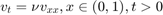
- 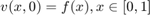
- 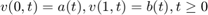
Numerical Solution
Using
nu = 0.1;
In domain 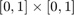, let 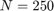, 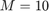, a.k.a 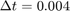, 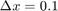
dx = 0.1; dt = 0.05; T = round(1 / dt); X = round(1 / dx); x = 1; t = 2; M = x * X; N = t * T;
Let 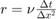
r = nu * dt / dx / dx;
Setting domain and boundary value
x_ = 0 : dx : 1; t_ = 0 : dt : t; [X_, T_] = meshgrid(x_, t_); u = zeros(size(X_)); u(1, :) = 0; u(:, 1) = sin(4 * pi * t_); u(:, M + 1) = 0; for jj = 1 : N for kk = 2 : M u(jj + 1, kk) = (1 - 2 * r) * u(jj, kk) ... + r * (u(jj, kk - 1) + u(jj, kk + 1)); end end figure; mesh(X_, T_, u); xlabel('x'); ylabel('t'); zlabel('u(numerical)');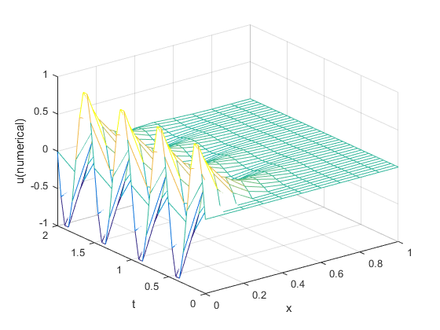
Value of Slices
function plotSlice_1_5_1( t_slice, dt, u, x_ ) t_slice_id = round(t_slice / dt) + 1; u_slice_num = u(t_slice_id, :); u_slice_num = u_slice_num(:); figure; hold on; title(sprintf('t = %.2f', t_slice)); plot(x_, u_slice_num, 'r-'); legend('numerical'); xlabel('x'); ylabel('u'); end
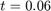
plotSlice_1_5_1( 0.1, dt, u, x_ );
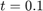
plotSlice_1_5_1( 0.1, dt, u, x_ );
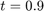
plotSlice_1_5_1( 2.0, dt, u, x_ );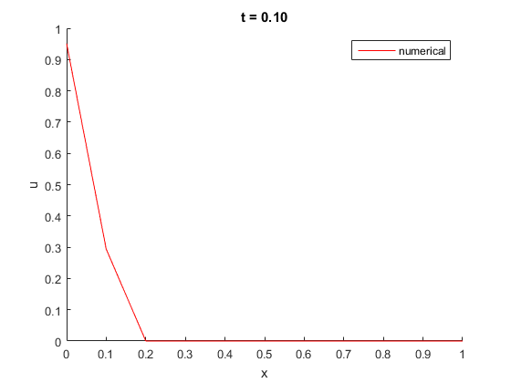 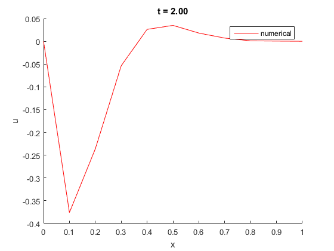